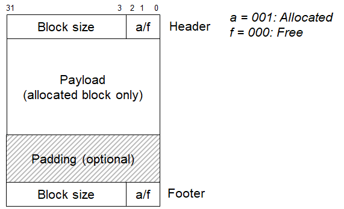
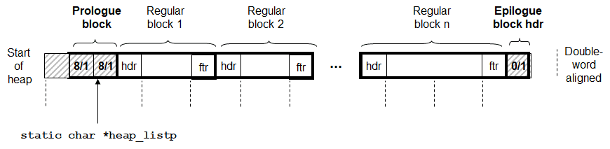

动态内存分配
程序需要动态内存分配的原因很简单，在很多时候，只有在程序实际运行时，我们才知道某些数据结构的大小。
动态内存分配器维护着一个进程的虚拟内存区域，称为堆，当内存不够的时候，可以使用系统调用sbrk来扩展和收缩堆。分配器有两种基本风格，两种风格都要求应用显式地分配块。它们的不同之处在于由哪个实体来负责释放已分配的块。
- 显示分配器，要求应用应用显式地释放任何已分配的块。
- 隐式分配器，要求分配器检测一个已分配的块何时不再被程序所使用，不再使用就释放这个块。
分配器的要求和目标
内存分配器需要满足以下的目标：
- 处理任意请求序列。
- 立即响应请求。
- 只使用堆。
- 对齐块。
- 不修改已分配的块。
分配器主要有两个性能指标，这两个性能指标是相互冲突的。
- 最大化吞吐率（对于每个请求，响应时间短）。
- 最大化内存利用率（空闲块尽量少）。
分配器设计的难点
堆的利用率很低的主要原因是一种称为碎片的现象，当虽然有未使用的内存但不能用来满足分配请求时，就发生这种现象。有两种形式的碎片：外部碎片和内部碎片。
内部碎片：一个分配块比有效载荷大时发生（由于需要存储额外的信息，以及需要对齐操作）。 外部碎片：当空闲内存合计起来足够满足一个分配请求，但是没有一个单独的空闲块足够大可以来处理这个请求时发生。
可以看出，外部碎片的处理要比内部碎片复杂，因为请求的序列式是不可预测的，所以分配器的策略通常采用启发式策略来试图维持少量的大空闲块，而不是维持大量的小空闲块。
一个实际的分配器要在吞吐量和利用率之间的把握好平衡，就必须考虑以下几个问题：
- 空闲块组织：我们如果记录空间块。
- 放置：我们如何选择一个合适的空闲块来放置一个新分配的块？
- 分割：在将一个新分配的块放置到某个空间块之后，我们如何处理这个空闲块中剩余部分？
- 合并：我们如何处理一个刚刚被释放的块。
使用隐式空闲链表实现一个简单的内存分配器
先针对上面的问题，给出使用隐式空闲链表的策略，最后给出代码实现。
空闲块组织
空闲块被组织成下面的形式：

放置
这里记录了堆的起始地址。每次放置，从起始开始查询，直到找到一个足够大的空闲块，如果没有足够大的空闲块，则调用sbrk在堆上分配空间。
分割
只有当一个空闲块分配给比它小的块的时候，才会发生分割，所以，分割的策略就比较简单了，就是把它分割成两部分。
合并
上面的表示，可以看做是一个双向链表，所以合并的策略就比较简单，释放之后，如果前面块为空闲块，就合并；如果后面块为空闲块，就合并。可以看出，使用这种策略，合并还是非常方便的。
代码实现
首先定义了以下的宏定义。
#define WSIZE 4
#define DSIZE 8
#define CHUNKSIZE (1<<12)
#define MAX(x, y) ((x) > (y)? (x) : (y))
/* 8字节对齐，所以分配内存的大小后3位均为0，所以可以用它来表示其他信息，这里表示是否空闲 */
#define PACK(size, alloc) ((size) | (alloc))
/* 读/写4字节 */
#define GET(p) (*(unsigned int *)(p))
#define PUT(p, val) (*(unsigned int *)(p) = (val))
/* 取出size和是否分配，注意，这里size的大小包含了头部和尾部的大小 */
#define GET_SIZE(p) (GET(p) & ~0x7)
#define GET_ALLOC(p) (GET(p) & 0x1)
/* 根据分配内存的地址找到头部和尾部 */
#define HDRP(bp) ((char *)(bp) - WSIZE)
#define FTRP(bp) ((char *)(bp) + GET_SIZE(HDRP(bp)) - DSIZE)
/* 根据分配内存的地址找到上一块和下一块 */
#define NEXT_BLKP(bp) ((char *)(bp) + GET_SIZE(((char *)(bp) - WSIZE)))
#define PREV_BLKP(bp) ((char *)(bp) - GET_SIZE(((char *)(bp) - DSIZE)))
整个隐式链表被组织成以下形式。首先，分配了8字节的头部，主要是要记录链表的开始，然后需要有一个尾部记录链表的结束，因为链表结束只需要4个字节，所以前面空了4个字节，以满足对齐的需求。

static char *heap_listp = 0; /* 指向堆的第一块内存 */
int mm_init(void) {
if ((heap_listp = mem_sbrk(4*WSIZE)) == (void *)-1)
return -1;
PUT(heap_listp, 0); /* 空白对齐 */
PUT(heap_listp + (1*WSIZE), PACK(DSIZE, 1)); /* 堆头 */
PUT(heap_listp + (2*WSIZE), PACK(DSIZE, 1)); /* 堆头 */
PUT(heap_listp + (3*WSIZE), PACK(0, 1)); /* 堆尾 */
heap_listp += (2*WSIZE);
/* 一次请求一个大块，而不是多次请求小块，可以提高运行效率 */
if (extend_heap(CHUNKSIZE/WSIZE) == NULL)
return -1;
return 0;
}
static void *extend_heap(size_t words) {
char *bp;
size_t size;
size = (words % 2) ? (words+1) * WSIZE : words * WSIZE;
if ((long)(bp = mem_sbrk(size)) == -1)
return NULL;
PUT(HDRP(bp), PACK(size, 0)); /* 修改空闲块大小和头 */
PUT(FTRP(bp), PACK(size, 0));
PUT(HDRP(NEXT_BLKP(bp)), PACK(0, 1));
return coalesce(bp);
}
static void *coalesce(void *bp) {
size_t prev_alloc = GET_ALLOC(FTRP(PREV_BLKP(bp)));
size_t next_alloc = GET_ALLOC(HDRP(NEXT_BLKP(bp)));
size_t size = GET_SIZE(HDRP(bp));
if (prev_alloc && next_alloc) { /* 上一块和下一块都已经分配了，无法合并 */
return bp;
}else if (prev_alloc && !next_alloc) {
/* 合并下一块，合并的时候一定要注意合并的顺序，不然bp的指向会不正确 */
size += GET_SIZE(HDRP(NEXT_BLKP(bp)));
PUT(HDRP(bp), PACK(size, 0));
PUT(FTRP(bp), PACK(size,0));
}else if (!prev_alloc && next_alloc) { /* 合并上一块 */
size += GET_SIZE(HDRP(PREV_BLKP(bp)));
PUT(FTRP(bp), PACK(size, 0));
PUT(HDRP(PREV_BLKP(bp)), PACK(size, 0));
bp = PREV_BLKP(bp);
}else { /* 合并上一块和下一块 */
size += GET_SIZE(HDRP(PREV_BLKP(bp))) +
GET_SIZE(FTRP(NEXT_BLKP(bp)));
PUT(HDRP(PREV_BLKP(bp)), PACK(size, 0));
PUT(FTRP(NEXT_BLKP(bp)), PACK(size, 0));
bp = PREV_BLKP(bp);
}
return bp;
}
void *mm_malloc(size_t size)
{
size_t asize;
size_t extendsize;
char *bp;
if (heap_listp == 0){
mm_init();
}
if (size == 0)
return NULL;
if (size <= DSIZE)
asize = 2*DSIZE;
else
asize = DSIZE * ((size + (DSIZE) + (DSIZE-1)) / DSIZE);
if ((bp = find_fit(asize)) != NULL) {
place(bp, asize);
return bp;
}
extendsize = MAX(asize,CHUNKSIZE);
if ((bp = extend_heap(extendsize/WSIZE)) == NULL)
return NULL;
place(bp, asize);
return bp;
}
static void place(void *bp, size_t asize){
size_t csize = GET_SIZE(HDRP(bp));
if ((csize - asize) >= (2*DSIZE)) {
PUT(HDRP(bp), PACK(asize, 1));
PUT(FTRP(bp), PACK(asize, 1));
bp = NEXT_BLKP(bp);
PUT(HDRP(bp), PACK(csize-asize, 0));
PUT(FTRP(bp), PACK(csize-asize, 0));
}
else {
PUT(HDRP(bp), PACK(csize, 1));
PUT(FTRP(bp), PACK(csize, 1));
}
}
static void *find_fit(size_t asize){
void *bp;
for (bp = heap_listp; GET_SIZE(HDRP(bp)) > 0; bp = NEXT_BLKP(bp)) {
if (!GET_ALLOC(HDRP(bp)) && (asize <= GET_SIZE(HDRP(bp)))) {
return bp;
}
}
return NULL;
}
void mm_free(void *bp)
{
if (bp == 0)
return;
size_t size = GET_SIZE(HDRP(bp));
if (heap_listp == 0){
mm_init();
}
PUT(HDRP(bp), PACK(size, 0));
PUT(FTRP(bp), PACK(size, 0));
coalesce(bp);
}
void *mm_realloc(void *ptr, size_t size)
{
size_t oldsize;
void *newptr;
if(size == 0) {
mm_free(ptr);
return 0;
}
if(ptr == NULL) {
return mm_malloc(size);
}
newptr = mm_malloc(size);
if(!newptr) {
return 0;
}
oldsize = GET_SIZE(HDRP(ptr));
if(size < oldsize) oldsize = size;
memcpy(newptr, ptr, oldsize);
mm_free(ptr);
return newptr;
}
这个代码整体来说，其实理解了并不难，就是说，逻辑上讲，并不难，但如果要自己写，可能有点不知道从何入手。代码虽然不长，但不好写，注意的地方有点多，比如合并部分的代码。另外，个人感觉不知道怎么调试这个程序，感觉不是很好操作。